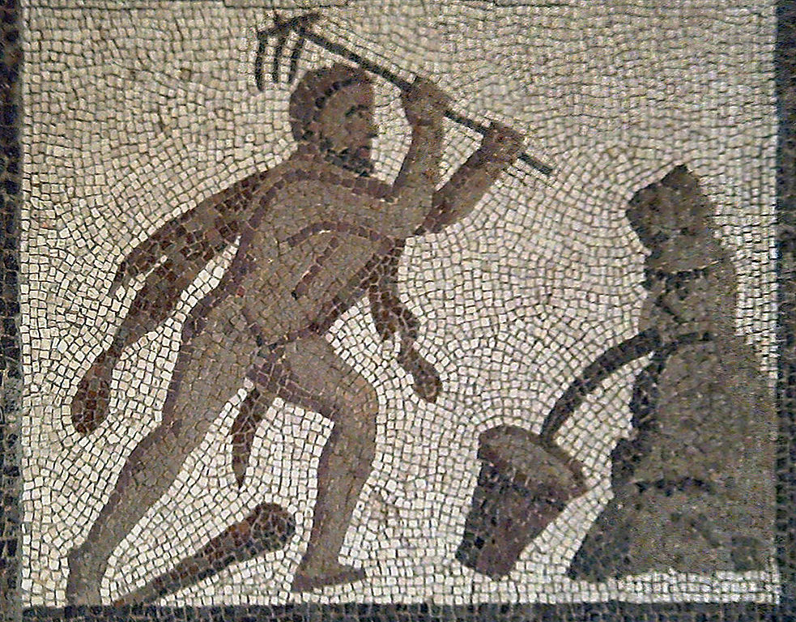
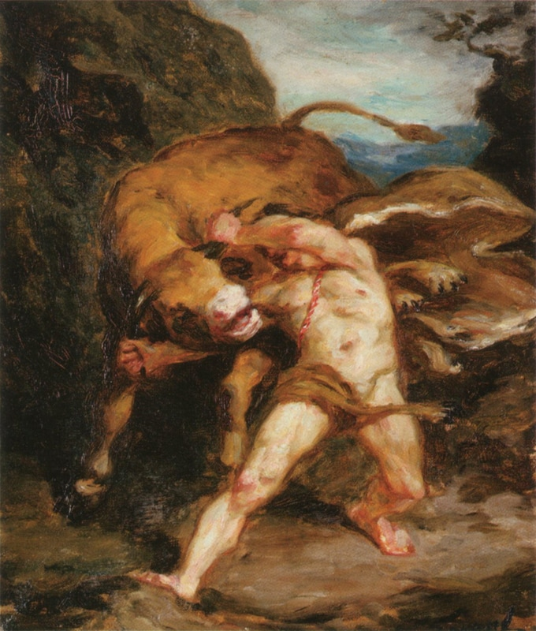
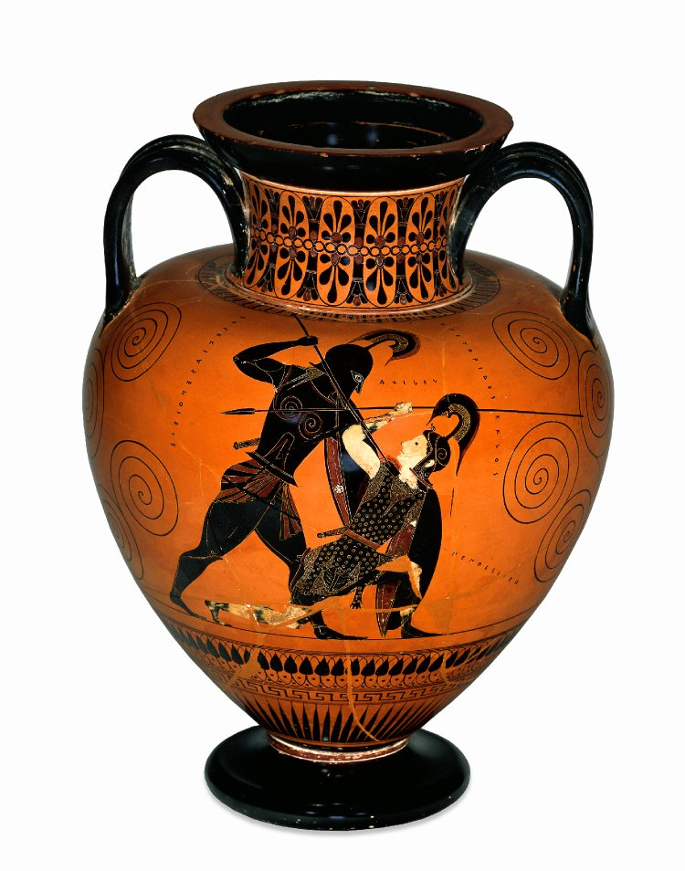
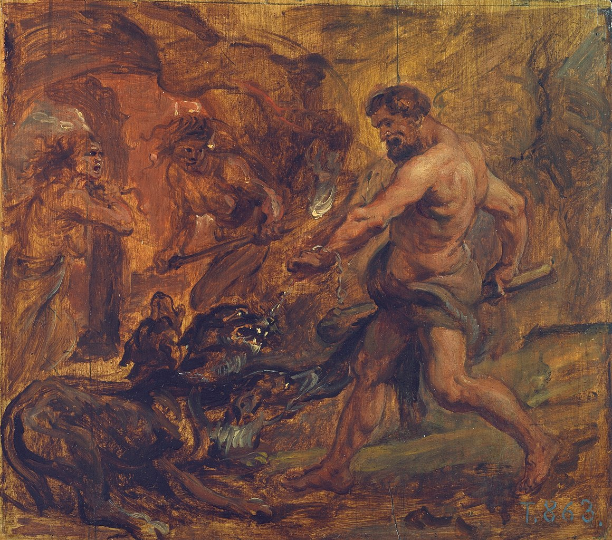

Labour #1 The Nemean Lion by the Ludwigsburg Porcelain Factory (1758-1824)
Heracles fighting the Nemean Lion that was harrassing a small village. After Heracles' had strangled the beast to death, he took its impenetrable skin and wore it as armor for years to come.
If you would like to read the details of the twelve labours, you might like to visit Greekmythology.com.
Labour #2 The Hydra of Lerna(c. 350 BCE)
A snake which heads multpilied when they were was cut off.
Labour #3 The Ceryneian Hind by Lysippos (4th century BCE)
A deer so fast it could outrun any arrow.
Labour #4 The Erymanthian Boar (6th century BCE)
After Heracles took it back to his king (the one who issued Heracles' twelve labours), he hid himself in a bronze pot.

Labour #5 The Augean Stables (200-250 CE)
Heracles was tasked to clean a huge stable for livestock. It would have taken ages if he did it manually.
So, Heracles came up with the idea to re-rout a nearby river and lead it through the stables.
Labour #6 The Stymphalian Birds (6th century BCE)
Hearcles shot these man-eating birds with arrows he had drenched in the poison of the Hydra.

Labour #7 The Cretan Bull by Émile Friant (19th century)
Heracles wrestled the bull into submission and got rid of the beast terrorizing the island of Crete.
labour #8 The Mares of Diomedes by Gustave Moreau (1866)
Heracles was tasked to steal all Diomedes' mares, but he did not know that they were wild and man-eating.
After Heracles' friend was killed by the horses, he let them feed on their master Diomedes in an act of revenge - and that is what Moreau portrayed in this painting.

labour #9 The girdle of Hippolyta (6th Century BCE)
The amazone (naked female warriors) Hippolyta was fascinated (or in love) with Heracles, and wanted to give him her belt for his efforts towards her clan.
But when the goddess Hera plotted the Amazones against Heracles, he had to kill Hippolyta and take the girdle for himself.
labour #10 Geryon the three-bodied Giant (6th century BCE)
Heracles had to steal the cattle of Geryon. Geryon attacked Heracles with three shields and three spears.
labour #11 Golden Apples of the Hesperides by Burne Jones (1869)
After Atlas gave Heracles the apples, he didnt want to take back the earth (to permanelty rest on his shoulders).
Heracles asked the rather dumb Atlas to improve his shoulder placement and to relief him for just a second. But, cunningly Heracles was able to cede the burden of the earth to Atlas and run away with the apples

labour #12 Cerberos By Peter Paul Rubens (1637)
Heracles had to journey into hell for his last task. He stole Hades' pet Cerberos and took him back to earth.
After he delivered Cerberos to the king's doorstep, his labours were completed.